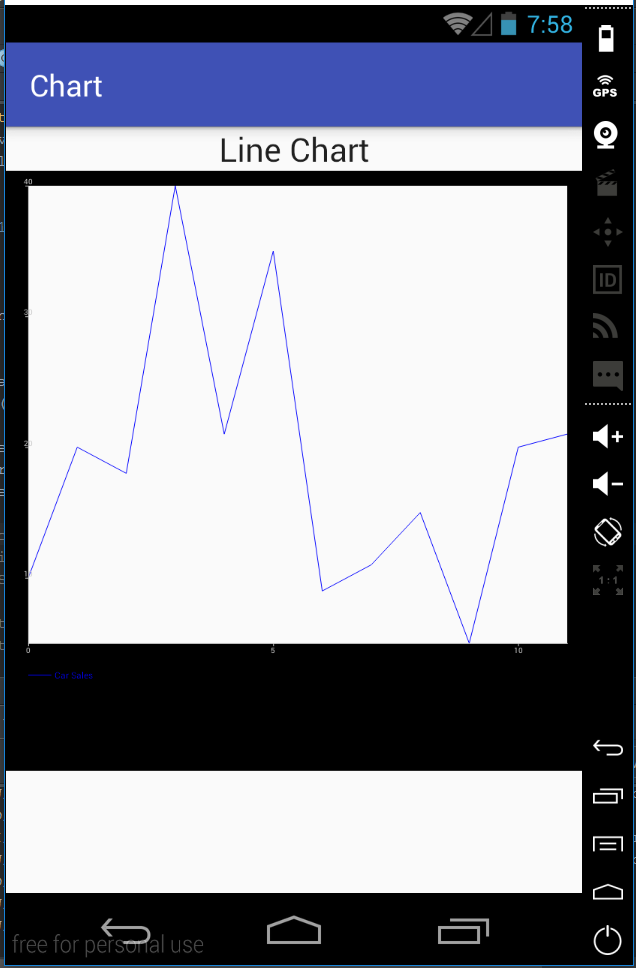
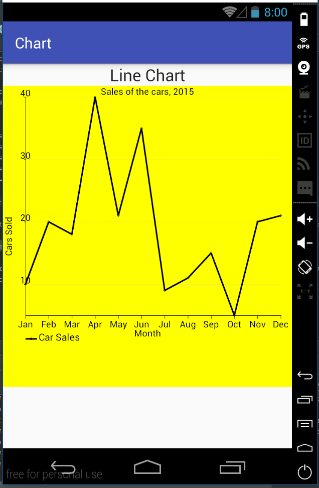

We need to create a new activity that will display the line chart. For that, create two new files: activity_line.xml and LineActivity.java. Include the new activity into the AndroidManifest.xml file:
<activity android:name=".LineActivity" />In the file activity_line.xml, we need to define the area where the chart will be displayed. We will create a text view with the title and the linear layout where the chart will be displayed:
<TextView
android:layout_width="fill_parent"
android:layout_height="wrap_content"
android:textAppearance="?android:attr/textAppearanceLarge"
android:text="Line Chart"
android:id="@+id/title"
android:gravity="center_horizontal"/>
<LinearLayout
android:id="@+id/line_chart_container"
android:orientation="vertical"
android:layout_width="wrap_content"
android:layout_height="400dp">
</LinearLayout>In LineActivity.java, we include the code that draws a simple line chart for car sales during 12 months:
public class LineActivity extends AppCompatActivity {
@Override
protected void onCreate(Bundle savedInstanceState) {
super.onCreate(savedInstanceState);
setContentView(R.layout.activity_line);
int month[] = {0, 1, 2, 3, 4, 5, 6, 7, 8, 9, 10, 11};
int carSale[] = {10, 20, 18, 40, 21, 35, 9, 11, 15, 5, 20, 21};
XYSeries series = new XYSeries("Car Sales");
for (int i = 0; i < month.length; i++) {
series.add(month[i], carSale[i]);
}
XYMultipleSeriesDataset dataset = new XYMultipleSeriesDataset();
dataset.addSeries(series);
XYMultipleSeriesRenderer mRenderer = new XYMultipleSeriesRenderer();
XYSeriesRenderer renderer = new XYSeriesRenderer();
mRenderer.addSeriesRenderer(renderer);
LinearLayout chartContainer = (LinearLayout) findViewById(R.id.line_chart_container);
chartContainer.removeAllViews();
GraphicalView chart = ChartFactory.getLineChartView(LineActivity.this, dataset, mRenderer);
chartContainer.addView(chart);
}
}We create two arrays of integers. The array int month[] indicates 12 months. The array int carSale[] includes the number of sold cars for every month accordingly. Both arrays must have the same number of elements. Otherwise, the app will crash. Next, we create XYSeries that encapsulates values for X and Y for a line chart:
XYSeries series = new XYSeries("Car Sales");
for (int i = 0; i < month.length; i++) {
series.add(month[i], carSale[i]);
}We create series XYMultipleSeriesDataset that includes 0 to many XYSeries:
XYMultipleSeriesDataset dataset = new XYMultipleSeriesDataset();
dataset.addSeries(series);We create two renderers: one for the XY type series, one for multiple XY series and add a simple renderer to the multiple renderer:
XYMultipleSeriesRenderer mRenderer = new XYMultipleSeriesRenderer();
XYSeriesRenderer renderer = new XYSeriesRenderer();
mRenderer.addSeriesRenderer(renderer);Next, we find by id the linear layout we have created as a container for a chart. We create the GraphicalView chart that encapsulates the graphical chart and add it to the linear layout:
LinearLayout chartContainer = (LinearLayout) findViewById(R.id.line_chart_container);
chartContainer.removeAllViews();
GraphicalView chart = ChartFactory.getLineChartView(LineActivity.this, dataset, mRenderer);
chartContainer.addView(chart);If we run the app using an emulator, we will see the following graph: 
This chart looks very simple. We will see how it is possible to customize the chart to make it more appealing.
Set the color of the line:
chart.setBackgroundColor(Color.CYAN);Set the width of the line:
renderer.setLineWidth((float)4.0);Set the point style:
renderer.setPointStyle(PointStyle.DIAMOND);Set the title for the chart and change its size:
mRenderer.setChartTitle("Sales of the cars, 2015");
mRenderer.setChartTitleTextSize((float) 24.0);We can customize the margins of the chart.
We can do this with the function setMargins(int[] margins) where margins are set in order: top, left, bottom, right:
int[] margins = {30, 60, 30, 30};
mRenderer.setMargins(margins);Change the black color for margins:
mRenderer.setMarginsColor(Color.argb(0x00, 0x01, 0x01, 0x01));Add titles for the Y and X axes:
mRenderer.setXTitle("Cars Sold"); //set the name of X axis
mRenderer.setYTitle("Month"); //set the name of Y axis
Change the size of axes title:
mRenderer.setAxisTitleTextSize((float) 24.0);Set the color of labels:
mRenderer.setLabelsColor(Color.BLACK);Set the size of labels of X and Y axes:
mRenderer.setLabelsTextSize((float)24.0);Add names to the months instead of having numbers:
//create the array of strings with months' names
String[] m = new String[] {"Jan", "Feb" , "Mar", "Apr", "May", "Jun","Jul", "Aug" , "Sep", "Oct", "Nov", "Dec"};
//add text label for every value on the X axis
for(int i=0; i< month.length;i++){
mRenderer.addXTextLabel(i, m[i]);
}Set the number of X axis label to zero to avoid displaying names of the months and numbers at the same time:
mRenderer.setXLabels(0);Set the color of values on X and Y axes to black. Also, change the color of the axes to black:
mRenderer.setXLabelsColor(Color.BLACK);
mRenderer.setYLabelsColor(0, Color.BLACK);
mRenderer.setXAxisColor(Color.BLACK);
mRenderer.setYAxisColor(Color.BLACK);In order to set the background color of the grid, two steps are required. First, set if the background color should be applied to true. Then, set the color:
mRenderer.setApplyBackgroundColor(true);
mRenderer.setBackgroundColor(Color.YELLOW);Set the text size of the legend:
mRenderer.setLegendTextSize((float)26.0);We also can display the grid using the following code:
mRenderer.setShowGrid(true);As a result, the customized line chart should display similar results to the below image: 